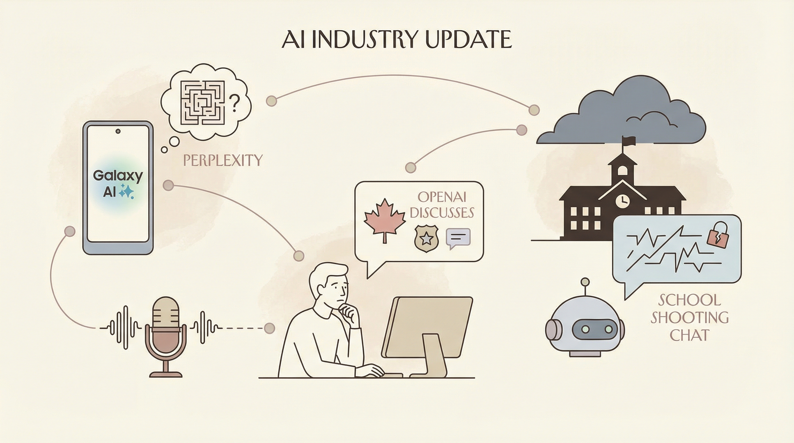

印度举办AI影响峰会，OpenAI、Anthropic等大厂参与。
两克伴AIGC日报
2026-02-23 星期一

本期关注：印度AI峰会汇聚OpenAI等大厂，YC指出创业者应转向AI智能体需求，智平方获超10亿融资估值破百亿，OpenAI与Jony Ive合作推动AI应用创新，AI技术发展与产业应用加速推进。
📰 行业动态
OpenAI分享AI模型在First Proof数学挑战中的证明尝试。
🔥 今日焦点
在最新的断言中，YC（Y Combinator）指出，随着AGI（通用人工智能）时代的临近，创业者应关注智能体而非人类的需求。这一观点的核心在于，随着群体智能的爆发，AGI正以惊人的速度发展。这一转变的重要性在于，它要求创业者重新思考产品设计和创新的方向。在AI领域，这一观点的影响深远，因为它促使从业者从智能体的角度出发，而非仅仅从人类用户的视角来构建AI产品。这种转变将推动AI技术更加贴合智能体的需求，从而加速AI技术的发展和应用，为未来智能代理时代的到来奠定基础。
---
近日，备受关注的AI企业智平方在完成7轮融资后，再度宣布完成5轮B轮系列融资，融资规模突破10亿人民币，估值更是高达百亿。这一消息在业界引起了广泛关注。
智平方作为一家专注于人工智能领域的创新企业，其核心业务涵盖了自动驾驶、智能语音识别等多个前沿技术。此次融资的成功，不仅体现了资本市场对智平方技术实力的认可，也标志着我国AI产业在资本市场的热度持续升温。
《OpenAI与Jony Ive共同打造的新项目：揭秘未来AI应用》
本文来自Jennifer Mossalgue的Newsletter，核心内容概述了OpenAI与苹果前设计总监Jony Ive共同发起的一项新项目。这一合作备受瞩目，因为它不仅体现了两位行业巨头的联手，更预示着AI领域可能迎来一场革命。
📚 深度长文
本文探讨了在AI编程中应用TDD（测试驱动开发）的方法，特别是针对AI Agent的开发。文章提出了“红/绿TDD”的概念，强调了在AI Agent开发中测试的重要性，并提供了具体的实践指导。文章的核心观点是，通过测试驱动开发，可以确保AI Agent的稳定性和可靠性，提高开发效率。关键论据包括TDD在传统软件开发中的应用，以及其在AI Agent开发中的独特优势。阅读价值在于，它为AI Agent开发者提供了实用的开发模式，有助于提升开发质量和效率。
---
本文以Seedance 2.0平台上的一个AI生成视频为例，探讨了人工智能在影视制作领域的突破性应用。作者通过一段手机拍摄的真实路人直播画面，展示了AI在处理复杂工业级机械变形动画方面的卓越能力。视频中的飞机在降落瞬间，机翼折叠、机身变形，最终变形成一台巨型金属机器人，展现出震撼的视觉效果。这一成果不仅体现了AI在影视特效制作上的潜力，也揭示了其在真实物理破坏系统、动态光影、粒子特效等方面的卓越表现。文章通过这一案例，深入分析了AI在影视制作领域的独特价值，为AI从业者和影视制作人员提供了宝贵的参考和启示。
📄 重点论文
---
---
🛠️ 产品推荐
《技术作为时间压缩：当前AI轨迹的物理“急转弯”解析》是一款专注于探讨技术如何压缩时间间隔，特别是AI领域的发展趋势的产品。该产品揭示了技术本质上是对意图与结果之间时间间隔的压缩，从引擎压缩物理旅行到互联网压缩信息传输，再到家电压缩生存劳动，技术不断缩短我们的时间成本。当前，多智能体框架的普及使得认知与执行过程被进一步压缩，开发者可以利用AI技术在一夜之间完成构建、测试和部署，将数百小时的计算和劳动压缩到8小时睡眠周期。本产品深入分析这一时代为何让人感到如此迷失，强调速度和加速度的感知，并揭示了摩尔定律等创新背后的时间压缩原理，为技术从业者提供深入洞察。
---
AI的“半人马”阶段席卷硅谷，OpenClaw等开源工具让开发者轻松部署AI代理，实现软件全流程自动化。该工具将繁琐的劳动转化为几分钟内完成，极大提升开发效率。然而，AI代理的广泛应用也引发安全担忧，如数据泄露和恶意软件风险。产品核心功能为AI代理自动化软件开发，为用户提供高效、安全的解决方案，助力技术从业者应对AI时代挑战。
---
Feels like magic是一款基于本地GPT-oss 20B的智能代理工具。该产品通过本地运行主模型和嵌入模型，实现与macOS应用、网页和本地文件的交互，同时保障用户数据隐私。Feels like magic具有以下特点：1. 适应性强，可执行多种任务；2. 安全可靠，仅允许相对安全的工具在配置中使用；3. 存在局限性，如长时间任务后易失去焦点，需直接指令使用持久内存。该产品为技术从业者提供了一种高效、安全的AI代理解决方案。